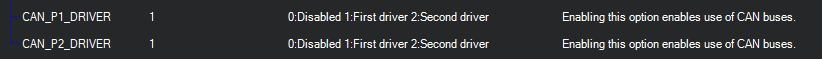
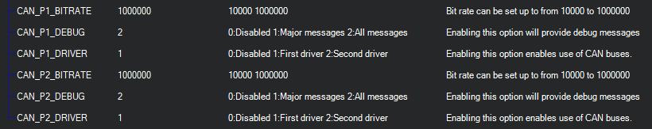

CAN Bus Setup¶
This article shows how to setup CAN bus and what options users have to accomplish the setup suitable for their specific needs.
Tip
The DroneCAN setup page is here. But the parameters below must be configured correctly in order to use the DroneCAN driver.
Note
DroneCAN was formerly known as UAVCAN.
Overview¶
A Controller Area Network (CAN bus) is a robust vehicle bus standard designed to allow microcontrollers and devices to communicate with each other in applications without a host computer. It is a message-based protocol, designed originally for multiplex electrical wiring within automobiles to save on copper, but is also used in many other contexts.
All nodes are connected to each other through a two wire bus. The wires are 120 Ω nominal twisted pair.
Most autopilots that run ArduPilot have either one or two CAN interfaces for connection of different devices. ArduPilot can support up to 3 CAN interfaces. The setup of the interfaces can be made in a way that will provide redundancy or maximum throughput or a mix of both. This is accomplished with a three layer approach, where apart from the physical interface there exists a driver layer that represents a specific protocol and a software layer (ArduPilot) that communicates on CAN bus through these drivers.
Each physical interface can be virtually connected to one of up to three drivers that represent the protocols to be used. For example, the most common scenario will be with all interfaces connected to a DroneCAN driver. Such setup will provide redundancy for devices with up to three CAN interfaces and full functionality for devices with one CAN interface.
Configuration settings¶
Enabling CAN interfaces¶
Each physical port can be turned off or connected to corresponding driver with
parameter CAN_Px_DRIVER, where x is the number of the CAN port.
The value of this parameter is the id of driver that will be associated with this
port (interface).
Each enabled bus/driver will use a block of RAM memory (not Flash) depending on the type of driver and if CANFD is enabled. For example, DroneCAN will allocate 12KB for its driver (24K if CANFD) by default, but can vary from board to board depending on its defaults, if set by its hardware definition file. The CAN_Dx_UC_POOL parameter can be used to change the pool size. Required pool size depends on bus traffic required by the attached DroneCAN peripheral and can sometimes be reduced for peripherals such as GPS or Compass, whereas peripherals such as ESCs require more bus traffic and therefore a larger pool size.
For example, the most common setup will have one driver and all interfaces will be connected to it. The CAN_P1_DRIVER and CAN_P2_DRIVER parameters in this configuration should be set to 1 (first driver). And that driver ( CAN_D1_PROTOCOL) be set to 1 (DroneCAN).
{kind=link}
After change of any CAN_Px_DRIVER or CAN_Dx_PROTOCOL the autopilot has to be rebooted for the changes to take place.
Configuration of CAN interfaces¶
After enabling the interface and reboot two more parameters can be set for each of the enabled interfaces.
These are:
CAN_Px_BITRATE- sets the desired rate of transfer on this interfaceCAN_Px_DEBUG- allows output of debug messages
Usually the bitrate used by default is 1 Mbit. Debug level can also be set on user’s preference and needs.
{kind=link}
When any of the interfaces are associated with any driver, that driver will be loaded with specified protocol.
Configuration of CAN driver¶
The driver should be set to use some protocol. Currently there is support for DroneCAN devices,
which is numbered 1, and numerous CAN ESCs.
The parameter CAN_Dx_PROTOCOL, where x is the number of driver, should be filled
with the number of protocol for this driver.
After the change to protocol the autopilot has to be rebooted for the changes to take place.
CAN ESCs¶
Several types of CAN based ESCs are supported: DroneCAN, KDECAN, ToshibaCAN, UAVCAN, and PiccoloCAN. For these ESCs, each type use several parameters for configuration. See the ESC’s individual description page here.